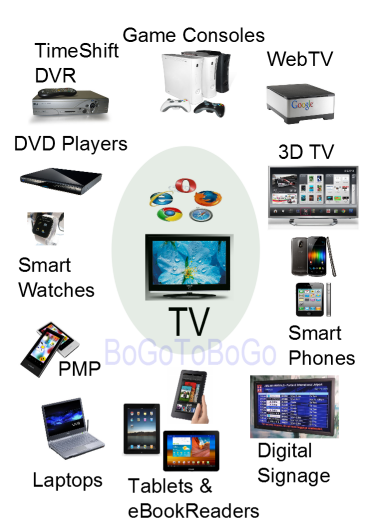
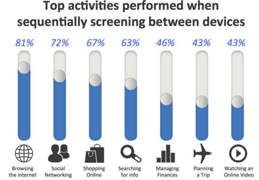
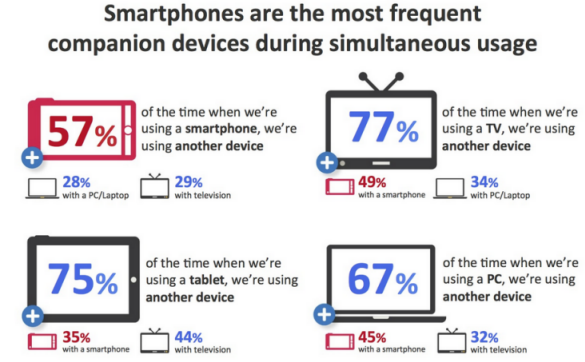

N-Screen Connected Devices Anywhere, Anytime, Any device
and Cloud
Though technically there are differences, N-Screen (or nScreen) Services and Multi-Device Services (or Connected Devices or Device Proliferation) are often used to express the same technology.
The examples of the connected devices are Smart TV, Car Navigation, PMP (Portable media player), Smart Pad, Digital Signage (Fifth Screen or Digital Out Of Home), Smart Watch, tablets, netbooks, eBook readers, Internet TVs, digital picture frames, cameras, game consoles, Blu-ray players etc.
N-Screen is described as a "unified entertainment experience across several devices," meaning that one can flit between watching the same program on one's TV, tablet or smartphone, with the software adapting the programming to the various formats automatically.
Though each of them performs its own task and they have different internal architecture, the common thing they share is each of them serves consumers whatever it is. Another thing they share among them is they are connected to internet. Until recently, consumers haven't had any complaints. But now things are different. Consumers want those devices to talk each other. In essence, the devices are different only in their size of screens. So, the N-Screen is in short, something like this: let's forget about the differences, and let's be focused on the service we provide to the consumers.

The era where we can focus on securing a single platform is over.
Thanks to the ever increasing internet-enabled devices, and the environment where consumers can use any device, anywhere, anytime is being created. Therefore, multi-device platforms are gaining attention for enabling users to enjoy the same services seamlessly, regardless of devices.
N Screen is about enabling the user to use multiple devices. The core element of N Screen Service is a platform that makes the use of content or services on multiple devices possible. Interface with content providers and replay & synchronization technology by device are essential.
Open API and Open Market Place can be actively used for the N Screen Platform. Open API is good for extending the number of devices usable while Open Market Place is for expanding transactions between content providers and consumers. Cloud technology is essential to the N Screen Platform for service synchronization on multi devices. - from http://www.reuters.com
Let's take a look at what's going on N-Screen world starting from the news of merge between Comcast/NBC Universal.
On January 18, 2011, Comcast/NBC Universal deal (The combination of the cable giant and media conglomerate) was approved.
Comcast now has stake in every mainstream media outlet: TV, film, and the Internet.
There are doom sayer's predictions like this:
By tying "free" access to its online TV Everywhere service (made newly powerful through the addition of NBCU content) to a cable subscription, and by charging a premium for "breaking the bundle" to allow consumers to have "naked" Internet access, Comcast will be able to make it very difficult for independent providers of online video (so-called OTT video) to survive - it won't appear cost-effective to consumers to cut the cord, and they'll think of online video as being "free" - from Why Comcast/NBCU matters
However, thanks to the FCC's conditions that Comcast should follow until 2018, basically, Comcast is not yet allowed to take control of the Internet, or Internet video.
Why does Comcast want NBC Universal?
That's because in the Internet business content is king. Comcast want to control video content.
Comcast already owns the largest paid TV network as well as one of the largest broadband networks in US.
By controlling a major media player such as NBC, Comcast can control the distribution of content.
With the development of NGN (Next Generation Networking)/all IP, the telco(Telecommunications company)s are the first players who embraced the concept of N-Screen. Mobile devices were considered as the core of the N-Screen services. This was an embarrassing reality to media companies who did not have their network infrastructures. All they could do is to utilize MNVO (Mobile virtual network operator).
However, telcos failed to deliver much anticipated results in terms of practical N-Screen business model. In other words, telcos have been struggling to get enough number of number of memberships for the N-Screen services, and as a result, they haven't made any promising business model that can be viewed as profitable. Telcos have to pay the price not only for the significant increment in traffic loads caused by N-Screen services, but also for the high cost contents they have to secure. On top of that, consumers are less willing to pay for the network they use than for the contents they watch.
In addition to that, what made things worse was poor performance from IPTV side. Consumers have not responded. Telcos failed to make any significant behavioral changes of consumers. So, to the consumers, the value in N-Screen services was just the fact that it enables us to do something while we move.
Even though the content providers (CPs) do not have networks, and therefore may suffer initially because they do not have subscription bases, they can distribute their contents (using N-Screen apps) more easily than ever thanks to app stores. Also, CPs are trying to monetize their N-Screen services, and this can make them secure their resource, use it to pay the cost of network usage to telcos in the future.
Telcos can make some breakthroughs in the dilemma by positioning themselves as a content aggregator. Again, however, with this strategy, not only there will be no guaranteed participants from the CPs but also they still have to pay for the cost of content supply.
The Comcast deal may be the prelude for the 2nd Chapter of N-Screen services. In other words, the main character of the N-Screen story is not the network (telcos) but media companies who own contents. It turns out that one-source multi-use serves well for media companies because of wide spread of broadband network infrastructures.
Will there be a Chapter 3?
We should not move data from one device to another. We put data in one place synchronized, the cloud:
- Synchronizing data from different devices - Microsoft Sync Framework
- Synchronizing data (converting the data into the same format) from different clouds - Open Data Protocol)
"Cloud computing, ubiquitous connectivity, and the increasing consumption of IP video are driving content providers to move more applications to the cloud and users to expect access to content on multiple devices." said Kris Alexander, Akamai's chief strategist for connected devices and gaming at the 2012 Consumer Electronics Show (CES).
More to come....
P2P communications using next generation high-speed (10Gbps) WiFi can help to reduce traffic loads. WiFi has been one of the key factors of the expansion of smart devices, and it's now a must have feature for every device. For example, not only smart phones, tablets, digital cameras has WiFi but also even SD card now has WiFi feature. Though cloud is important for data sync and share between devices, the method of using cloud is more time consuming than using WiFi. So, P2P communications backed by WiFi infra-structure can make N-screen service more effective, and it can reduce traffic loads caused by cloud data sync and cloud data sharing.
HTML 5 is virtually device agnostic. So, it's a powerful tool to build cross-platform apps.
More to come....
- Major tech firms promise more internet-connected devices
We're in the beginning of a world in which everything is connected to the internet and with one another, while powerful yet relatively cheap computers analyse all that data for ways to improve lives.
Toothbrushes tell your mirror to remind you to floss. Basketball jerseys detect impending heart failure and call the ambulance for you.
At least that's the vision presented last week at the Mobile World Congress wireless show in Barcelona, Spain. The four-day conference highlighted what the tech industry has loosely termed "the Internet of Things".
Some of that wisdom is already available or promised by the end of the year.
Mar 2014, Associate Press - GLaunching the Wolfram Connected Devices Project
Connected devices are central to our long-term strategy of injecting sophisticated computation and knowledge into everything. With the Wolfram Language we now have a way to describe and compute about things in the world. Connected devices are what we need to measure and interface with those things.
In the end, we want every type of connected device to be seamlessly integrated with the Wolfram Language. And this will have all sorts of important consequences. But as we work toward this, there's an obvious first step: we have to know what types of connected devices there actually are.
So to have a way to answer that question, today we're launching the Wolfram Connected Devices Project-whose goal is to work with device manufacturers and the technical community to provide a definitive, curated, source of systematic knowledge about connected devices.
Jan 2014, blog.stephenwolfram.com - Google Is Buying Connected Device Company Nest For $3.2B In Cash
Google is acquiring connected device company Nest for $3.2 billion. Google sent out an email to employees noting the acquisition today and later issued a press release.
In the release, Google noted that Nest has been offering its best-selling thermostat since 2011 and recently began offering the Protect smoke alarm, which networks with its other devices.
Nest Founders Tony Fadell and Matt Rogers will both join Google. Rogers was one of the first engineers on the iPhone team at Apple.
Jan 2014, Techcrunch - Recipe Madness: Helping consumers see the value in connected devices
Increasingly consumers are unwrapping and installing connected devices but after that initial thrill of turning on their lights or opening the garage door with their phones, they're leaving them alone, wondering why they paid so much for connectivity in the first place. And for consumers who have yet to make the leap to a connected mindset, products that cost what might be five times the cost for a "dumb" device leaves them wondering why the heck they'd part with that kind of cash for a scale or a smoke detector.
Jan 2014, GigaOm - TV operators can now expand their services beyond the traditional Set-Top Box to a variety of tablets, mobile devices, PCs, and networked TVs
CUPERTINO, Calif., Jan. 5, 2012 /PRNewswire/ -- Zenverge, Inc., a leading developer of Advanced Media ICs, and LG CNS, a global service provider and a leader in Android based STB products , announced today that they have been working together to create solutions for delivery of pay-TV services to multiple screens. This technology was first demonstrated at IBC 2011 inAmsterdam and the K-Labs 2011 show in Korea.
PRNewswire - Smartphones, iPad hikes BBC viewing: VOD usage rockets 1,000% in December
LONDON, January 16, 2012, The BBC's online domestic catch-up service, the iPlayer, is increasingly being used by Brits who own smart TVs, smartphones and tablets.
In December this kind of iPlayer usage spiked 1,000% to seven million program requests on connected TV sets compared to the previous year, per the BBC. Mobile phones and tablets recorded 13 million and 10 million requests respectively, year-on-year increases of 163% and 596%. Chicago Tribune -
The overall smart TV market was worth $86 billion in 2010 and is expected to reach $265 billion by the end of 2016 with a CAGR of 17%.
In terms of unit shipment, smart TV was valued at 43.6 million units in 2010 and is expected to reach 64 million by the end of 2011 with an annual growth of 47%. By 2016, smart TV unit shipment is expected to reach 153.2 million units with a CAGR (Compound Annual Growth Rate) of 19%. www.reportlinker.com - The opportunities, and risks, of TV Everywhere
NOV 22, 2011, As new video content and delivery ecosystems expand and mature, it brings together unlikely bed-fellows. Telco OSS/BSS infrastructure must address the TV challenge.
http://connectedplanetonline.com - Akamai Announces UltraViolet (UV) Solution at CES
January 8, 2012, CDN also announces availability of Adobe HTTP Dynamic Streaming on the Akamai HD Network and SecureHD content protection. http://www.streamingmedia.com/Articles/ReadArticle.aspx?ArticleID=79755 - Akamai seeks to bring UltraViolet to every device
Jan. 8, 2012, With the number of devices supporting IP video continues to expand, content creators are seeking ways to reach consumers on as many screens and as many devices as possible. That's the impetus behind cable's TV Everywhere initiative, as well as Hollywood's new UltraViolet video format. In order to cater to these customers, Akamai is rolling out new capabilities to its HD Network for video distribution that will make it even easier for content owners to securely distribute content to nearly any device.
http://news.taaza.com/source/846839-akamai-seeks-to-bring-ultraviolet-to-every-device.html - Next steps in multi-screen TV
April 11, 2012, With Cable Congress and IP&TV World Forum behind us, and NAB starting on Monday, there are no prizes for guessing what the major industry focus is again for 2012. It is multi-screen TV, albeit with a twist for the new season in the form of off-net OTT extensions to Pay TV. Off-net Pay TV, using OTT broadband delivery, is an extension of the existing multi-screen delivery model and harnesses the infrastructure service providers have already invested in, so it falls firmly within the multi-screen category.
http://www.v-net.tv/next-steps-in-multi-screen-tv/ - Multi-screen mania: how our devices work together

August 29, 2012, The reality of our multi-screen world is that consumers are increasingly turning to different devices throughout the day to accomplish tasks. A user might rely on a smartphone to dash off a quick text message or to scan a product in store, then use a tablet to plan trips at home and then turn to a PC to do more heavy research.
http://gigaom.com/2012/08/29/multi-screen-mania-how-our-devices-work-together

- If Content Is King, Multiscreen Is The Queen, Says New Google Study
August 29, 2012, TechCrunchNew research out from Google, working with market analysts Ipsos and Sterling Brands, puts some hard numbers behind the often-noticed trend of how people in the U.S. are using a combination of phones, tablets, computer and TVs to consume digital content.
While each of these has a significant place in our consumption today, their real power lies in how they are used together - in combination, 90% of all of our media consumption, or 4.4 hours per day, is happening across all four (which doesn't leave much room for paper-based books and publications; or for radio). This not only has implications for how content is designed, but also for how companies like Google will continue to hedge their bets across all four screens.
- And there are several YouTube videos on N-Screen.
UltraViolet, the new arising cloud based digital format that allows users to play the purchased movies to any UltraViolet-supported device, including game consoles, mobile devices (Android and iOS) and laptops.
After last year's lumpy start, so far, UV have lukewarm response from the media industry.
Here is the list of the recent developments.- ultraviolet-solution at CES 2012.
- Amazon casts flattering light on UltraViolet.
-
http://articles.boston.com, January 26, 2012
Watching movies in UltraViolet. -
http://www.guardian.co.uk, Dec 8, 2011
Watching movies in UltraViolet.
UltraViolet service offering digital locker of films and TV planned for UK. Consortium including Warner Brothers, Sony Pictures and Fox backs service aiming to revolutionise home entertainment. -
http://www.techcrunch.com, Feb 22, 2012
UltraViolet Hits 800k Digital Media Locker Accounts, Added 50k In The Last Six Weeks.
UltraViolet might sound too good to be true, but the service is growing. More Blu-ray titles are featuring the digital media option and consumers are at least trying the movie industry's alternative to, well, piracy. iSupply just announced that there are now more than 800,000 household accounts, up from 750,000 at the beginning of 2012.
So, what is UV?
UltraViolet is the movie industry's first major push into digital media. Rather than relying on a 3rd party like Netflix, UltraViolet is run by the Digital Entertainment Content Ecosystem (DECE), a consortium of major Hollywood studios, CE makers, retailers and DRM vendors.
These companies came together in 2008 and proposed the digital locker service now called UltraViolet that lets consumers store and share digital media. Originally these movie titles were only to be bundled with physical media but Paramount started selling UltraViolet titles seperatly late last month. With UltraViolet, consumers can watch media on up to 12 devices and share between six members of the household. Content can either be downloaded or streamed from the cloud. Wiki's description:UltraViolet (UV) is a digital rights authentication and cloud-based licensing system that allows consumers of digital home entertainment content to stream and download purchased content to multiple platforms and devices. UltraViolet adheres to a buy once, play anywhere approach that allows users to store digital proof-of-purchases under one account to enable playback of content that is platform- and point-of-sale-agnostic.
- Advantages
- UltraViolet is as compatible or more so than its predecessors. The platform works on Apple products, on the Android operating system and on laptops. And also there are streaming and downloading options.
- With UV, proprietary DRM schemes are still employed, but the standard attempts to contain and insulate users from the often unpleasant idiosyncrasies of DRM. As a result, users only need to worry about one, single standard.
- UltraViolet will soon be able to keep track of our purchases and will automatically update your digital locker."
- Disadvantages
- The selection lists are slim. Currently only a handful of titles are available on UltraViolet.
- Disney is not interested, instead the studio is working on its own cloud library.
- Although UV tries very hard to solve the non-interoperability issues that have plagued competing DRM formats, it is not perfect. We'll still need a UV-compatible player with ties to the Internet.
Ph.D. / Golden Gate Ave, San Francisco / Seoul National Univ / Carnegie Mellon / UC Berkeley / DevOps / Deep Learning / Visualization